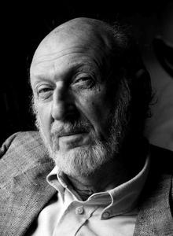
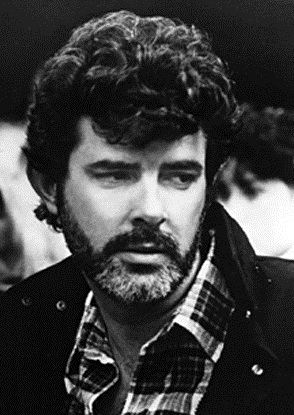
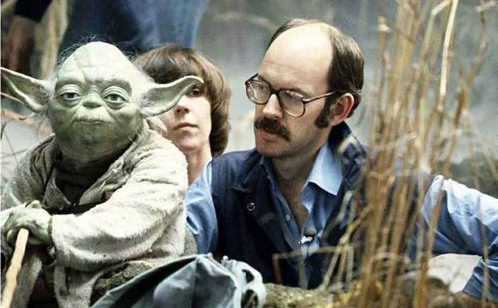
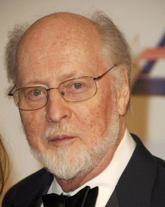
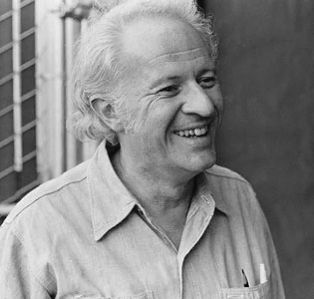
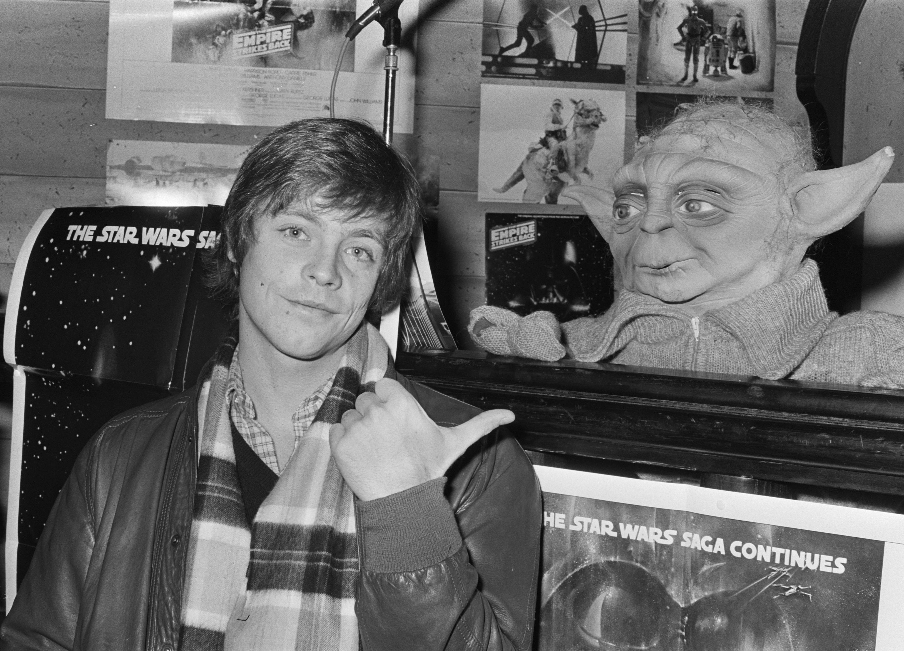
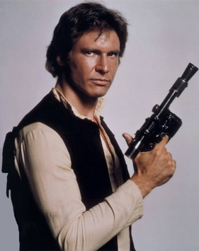
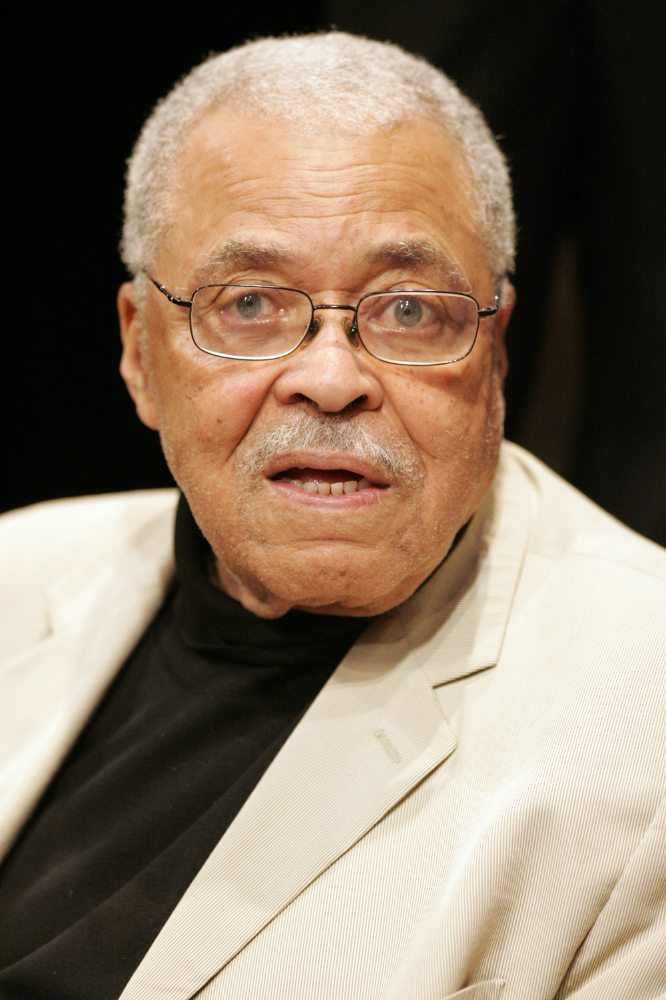

Mark Hamill had a car accident that broke his face. George Lucas mortgaged everything to finance it himself. The director went 25 days over schedule and came close to being fired. Three people on the entire production knew the real ending.
▶ Watch the 1980 Theatrical TrailerBefore the Film Existed_
A New Hope opened May 25, 1977. It wasn't supposed to be a hit. Within six months it had made $300 million and changed every calculation in Hollywood. What happened next, how Lucas structured the deal, who got hired, and what Hamill's face had to do with any of it, set the terms for everything that followed.
Fox Thought They Won
Fox got distribution fees and first-look rights. Lucas got everything else, the characters, the sequels, the merchandise, the licensing. The studio considered it generous of them to let Lucas have the scraps. When the toys alone generated $100 million in 1977 and 1978, the full weight of the miscalculation became apparent.
Lucas Mortgaged Everything
To keep creative control of Empire, Lucas refused Fox financing and borrowed $25 million from Bank of America against his personal assets and Lucasfilm's future earnings. A box office failure would have bankrupted him personally. He accepted that risk to ensure no studio could alter the film. The creative independence that produced Empire had a specific price tag.
Hamill's Car Crash
In January 1977, four months before A New Hope opened, Mark Hamill was in a serious car accident. He broke his nose and cheekbone. The injuries were surgically repaired but left a visible difference in his appearance between the two films. The wampa attack opening Empire, which leaves Luke's face slashed, is widely understood to have been written partly to explain that difference. Lucas and Hamill have both acknowledged the connection without fully confirming it.
Leigh Brackett Dies Before She Sees It
Lucas hired Leigh Brackett, screenwriter of The Big Sleep, Rio Bravo, and The Long Goodbye, to write the first draft of Empire. She delivered it in February 1978 and died of cancer six weeks later. Lawrence Kasdan, 29 years old and unknown, was hired to complete the screenplay. Empire is dedicated to Brackett.
Making The Empire Strikes Back_
Principal photography began March 5, 1979 at Finse, Norway, one of the worst winters in the region's recorded history. It ended at Elstree Studios in London in September 1979, 25 days late and $6 million over budget. What happened in between was unprecedented: a major blockbuster sequel built by a director who had never worked at this scale, deliberately slowing everything down.
Irvin Kershner was Lucas's former professor at USC's film school. He was 55, known for intimate character work, not spectacle. Lucas chose him precisely because he wouldn't make a crowd-pleasing machine. What followed was 175 shooting days of conflict. Kershner insisted on rehearsal time that wasn't budgeted. He let scenes breathe past the point where effects supervisors grew anxious. Lucas flew to London three times to discuss the schedule. Kershner went 25 days over anyway. The film is better for every day of it.
Finse in the Worst Winter on Record
The Hoth exterior sequences were shot in Finse, Norway, 4,000 feet above sea level on the Hardangerjøkulen glacier. The crew arrived during one of the worst winter storms the region had seen in decades. Winds reached 100 mph. Crew and cast were snowbound for four days. Mark Hamill had to be escorted across a rope line to reach set. The desperation visible in the opening sequence is not entirely acted.
Elstree Studio Fire
In June 1979, a fire broke out at Elstree Studios and destroyed one of the main sets mid-production. The set had to be rebuilt from scratch, adding weeks to an already delayed schedule and pushing the budget further past its limit. Lucas, simultaneously producing Raiders of the Lost Ark and financing Empire personally, was by multiple accounts under extraordinary pressure.
The Carbon Freeze Set Was Unbearable
The carbon freeze chamber was lit to achieve its red-orange industrial glow. The lighting rigs generated enormous heat. Crew members rotated off set every 20 minutes to avoid heat exhaustion. Several required medical attention. Harrison Ford's scenes were shot in multiple short bursts over several days. The urgency in those sequences is not performed.
ILM Invented a New Technique for the AT-ATs
The AT-AT walkers were physical models animated frame-by-frame, but stop-motion produces an unnatural strobing effect. ILM's Phil Tippett developed go-motion: motorized rods moved the model during each exposure, introducing natural motion blur. It made the AT-ATs feel genuinely massive and heavy. The technique was used in films through the early 1990s.


Hoth · Dagobah · Cloud City_
Empire is three films happening simultaneously in three radically different environments. Each was designed by Ralph McQuarrie from concept paintings before a single set was built. McQuarrie is arguably the most important person in the visual history of Star Wars, the films look the way they do because of his imagination.
The Battle That Opened the Film
The opening Battle of Hoth was achieved with physical scale models, go-motion AT-ATs, pyrotechnics shot on the Norway glacier, and matte paintings. No CGI existed. The snowspeeders were models on wires. The trench explosions were real charges buried in Finse snow. 40 ILM staff worked on this sequence alone for eight months.
900 Plants and a Genuine Smell
Dagobah was built entirely on Stage 3 at Elstree over six weeks. The crew sourced 900 live plants from a London nursery embedded in fog over standing water. It looked extraordinary on film and smelled genuinely foul on set. Hamill described the heat and humidity as nearly unbearable. The Yoda puppet required five operators working from below the stage floor.
Built From a Painting
Cloud City came entirely from McQuarrie's concept paintings before Norman Reynolds built it full scale. The reactor shaft where Luke falls was a vertical set 40 feet tall at Elstree. Luke's fall was shot with a stunt performer on wires against a separately filmed background. The white-and-grey corridors were designed to feel clinical and cold, a deliberate contrast to the warmth of the Rebellion.
The Man Who Invented How Star Wars Looks
Former NASA illustrator hired by Lucas in 1975 to paint key scenes before any sets, costumes, or props existed. McQuarrie's paintings became the visual language of the franchise: Vader's helmet, R2-D2's design, C-3PO's gold. For Empire he painted Hoth, Dagobah, and Cloud City. Everything physical followed his vision.
The Mynocks Were an Afterthought
The asteroid sequence was added to fill running time while Dagobah sets were under construction. The mynock creatures were added even later in post-production after test screenings found the sequence too passive. The space slug was a puppet. The mynocks were hand-puppets photographed against a separately lit background. Both became iconic despite being improvised fixes.
The Man Who Built the Worlds
Production designer John Barry, who won an Academy Award for A New Hope, died of meningitis during Empire's production in June 1979. He was 43. Norman Reynolds took over and completed the film. Barry's preliminary design work on Empire's look is preserved in Elstree records. The film is informally dedicated to his contribution.
your father.”
How They Kept the Secret_
The Vader reveal is the most documented secret in cinema history. It held for three years, through an era of no internet, but with a leak-prone industry, hundreds of crew, and a cast that would have been the natural source. How it stayed secret, and what happened when it didn't, is its own story.
David Prowse Got a Different Line
Prowse, who physically performed Vader, was given the false line "Obi-Wan killed your father" to read on set. He delivered it in character. Hamill was told to react to whatever Vader says. The scene was shot multiple times. Prowse's dialogue was never going to appear in the finished film, it existed entirely to protect the secret. Prowse claimed for years he didn't know the real ending. Kershner and Lucas disputed this.
Told the Truth Moments Before Filming
Kershner told Hamill the real line shortly before cameras rolled. Hamill was instructed to react as if genuinely hearing it for the first time. His face in that sequence, the disbelief, the horror, the calculation, is largely unrehearsed. Hamill has said the emotional reality of the moment was genuinely destabilising. He considers it the finest acting he ever did in the franchise.
Jones Recorded It Once
Jones, given the real script, one of three people, recorded "No. I am your father" in a single post-production session. He delivered it with quiet certainty rather than dramatic emphasis. The calm is what makes it land as truth rather than revelation. His work on A New Hope and Empire was uncredited at his own request. He was first credited in Return of the Jedi.
What Happened in Theaters
Contemporary accounts describe audiences first laughing, assuming Vader was lying, then going quiet, then erupting. The NY Times noted the collective stunned silence. With no internet and no home video, the question of whether Vader was telling the truth lived entirely in memory and argument for three years. That uncertainty is a cultural artifact that cannot be recreated.
What's Actually in It_
Empire is structurally unlike almost anything that came before it in mainstream Hollywood. It begins with a defeat. It ends without resolution. Its hero loses his hand, his mentor, and his certainty. Every major character relationship changes. These are not accidents, they were fought for, against significant pressure to deliver a more conventional entertainment.
"I Know": Ford's Improvisation
The scripted line was simple: Leia says "I love you," Han says "I love you too." Ford tried the scripted version multiple times. Kershner kept the takes but sensed something was wrong, it made Han sound like a different character. On one take, Ford improvised "I know." Kershner immediately cut and said "print it." The two words contain everything about Han Solo: his ego, his terror, his love, his defiance. It is arguably the finest moment of character economy in the original trilogy.
The Face Is Partly Albert Einstein
Stuart Freeborn sculpted Yoda while seriously ill, basing the face on two sources: his own reflection and photographs of Albert Einstein. The combination of age, wisdom, and mischief is intentional and documented. Frank Oz operated the head and right arm while voicing the character; four additional puppeteers controlled the hands from below the stage. The scene where Yoda lifts the X-wing required all five working in perfect synchronisation.
The Ending That Broke the Formula
Empire ends in defeat. Han is frozen and taken by Boba Fett. Luke has lost his hand, his mentor, and his certainty about his own family. The Rebellion is scattered. There is no victory. The final image is the heroes standing at the viewport of a medical frigate looking into space with everything still unresolved. In 1980 this was considered a structural risk of the highest order. Kershner and Lucas held the line against every commercial instinct that said soften it.
Fewer Than 30 Words. Infinite Mythology.
Boba Fett says fewer than 30 words across The Empire Strikes Back. Jeremy Bulloch communicates everything through posture, the tilt of the helmet, the stillness, the casual way Fett stands while others move. Fett became one of the most obsessively popular characters in the franchise despite almost no screen time. His first appearance was in the 1978 Star Wars Holiday Special, a production so widely disavowed that Lucas reportedly wanted every copy destroyed.
The Betrayal That Wasn't Simple
Williams negotiated with Kershner and Lucas to play Lando as a man making impossible choices, not a straightforward traitor. His approach, charm covering desperation, makes the betrayal feel like genuine moral compromise. Williams has said he wanted audiences to understand that Lando had no choice: the Empire had arrived before the heroes and presented terms he couldn't refuse. That nuance is entirely Williams's contribution.
A Different Actor, Replaced 20 Years Later
The Emperor appears in Empire in a single hologram scene. In the original 1980 release, the Emperor was performed by Marjorie Eaton in prosthetic makeup, with the voice dubbed by Clive Revill. The eyes were optically replaced with chimpanzee eyes. In the 2004 DVD release, Lucas replaced the scene entirely, digitally inserting Ian McDiarmid. The original version has never been officially released on home video in any modern format.


The Wisdom
of Yoda
This one a long time have I watched. All his life has he looked away, to the future, to the horizon. Never his mind on where he was, hmm? What he was doing. Adventure. Excitement. A Jedi craves not these things.
Size matters not. Look at me. Judge me by my size, do you? And well you should not. For my ally is the Force, and a powerful ally it is. Life creates it, makes it grow. Its energy surrounds us and binds us. Luminous beings are we, not this crude matter.
Do, or do not. There is no try.
Wars not make one great.
The film I am most proud of. Not because it was successful, because it was true.
— Irvin Kershner · Director · 1980
John Williams and The Imperial March_
The A New Hope score established the universe. The Empire Strikes Back score defined its darkness. John Williams wrote the Imperial March specifically for Vader's entrance on Hoth, and in doing so created one of the most recognizable pieces of music ever composed.
Where the Imperial March Comes From
Williams drew on the European military march tradition, specifically Holst's The Planets (Mars) and Chopin's Funeral March, to create a theme that communicated imperial power and inevitability simultaneously. The brass-heavy, rhythmically rigid structure was designed to feel like machinery: relentless, inhuman, unstoppable. Composed as a standalone piece first, then integrated as a leitmotif that could appear in fragments across future films.
200+ Uses and Counting
The Imperial March has been used in over 200 films, television shows, political broadcasts, sporting events, and cultural moments. It has been played at the entrance of actual heads of state. The BBC used it in news coverage of the 2016 US election. Its cultural shorthand for menacing power is so complete that audiences understand the reference without any Star Wars context whatsoever.
2 Million Copies in the Year of Release
The Empire Strikes Back soundtrack album sold over 2 million copies in 1980, at a time when film soundtrack albums rarely cracked 500,000. Williams received his fourth Academy Award nomination. The album reached #22 on the Billboard pop chart, essentially unheard of for an orchestral film score. Williams recorded the complete score with the London Symphony Orchestra at Abbey Road over three weeks in January 1980.
What 1980 Actually Looked Like_
Empire opened on a Wednesday in 126 theaters. By Saturday it was in 823. Critical reception was respectful but divided. Audiences were not divided. Lines formed before dawn at every major city theater. Some screenings ran 24 hours. The Vader reveal produced documented collective shock in theaters nationwide.
Opening Weekend
Empire earned $10.8 million in its opening weekend across 823 theaters, the widest opening for any film to that point. It crossed $33 million in its first 10 days, becoming the fastest film to that milestone in history. It was the highest-grossing film of 1980, surpassing every competitor including Ordinary People, Coal Miner's Daughter, and Raging Bull.
Not Immediately a Masterpiece
Vincent Canby in the New York Times called it "essentially a Saturday afternoon serial." Pauline Kael was lukewarm. Gene Siskel gave it three and a half stars. The 1980 consensus: impressive technically, emotionally incomplete, a good middle chapter. The full critical rehabilitation, which took Empire's score from around 75% in early aggregations to 97% by 2024, happened gradually over 25 years as retrospective criticism replaced opening-week notices.
The AT-AT Sold Out in Two Weeks
Kenner's AT-AT Walker toy sold out nationally within two weeks. Parents reported driving to three or four stores and finding empty shelves at each one. Kenner reported $150 million in Star Wars merchandise revenue for fiscal year 1980. The toy line had generated over $1 billion in cumulative sales by the time Return of the Jedi arrived. Boba Fett, introduced via a mail-in promotion in 1979, was the most individually sought-after figure.
The Academy Missed It
Empire received Academy Awards for Best Sound and a Special Achievement Award for visual effects. It was not nominated for Best Picture, an omission that has become one of the most discussed oversights in Academy history. The film that defined the blockbuster era and influenced virtually every major studio film of the following decade was considered, at the time, genre entertainment rather than cinema.
Key Figures_
Directors, writers, performers, designers, and craftspeople. Ten people whose decisions and work define what Empire is.

Lucas's former USC film professor. Went 25 days over schedule and $6 million over budget. Fought for every rehearsal, every beat of silence, every moment that didn't immediately advance plot. The film is better for every argument he won. Died in 2010 having never directed another film of this scale.
Wikipedia
Wrote the story treatment, mortgaged his assets to self-finance the $18M production, produced from a distance while simultaneously developing Raiders of the Lost Ark. Flew to London three times to address the schedule overrun. Held the creative line on the ending when every commercial instinct said soften it.
WikipediaScience fiction legend and Hollywood veteran, The Big Sleep, Rio Bravo, The Long Goodbye. Delivered her first draft of Empire in February 1978 and died of cancer six weeks later. She never saw the film she helped build. The film is dedicated to her memory.
WikipediaHired after Brackett's death to rewrite from scratch. 29 years old, essentially unknown. His draft gave Empire the Han-Leia romantic tension, sharpened the Vader reveal, and gave every character a distinct voice. Empire was his first produced screenplay.
Wikipedia
Muppets performer who built Yoda from the ground up, voice, movement, philosophy, comic timing. The misdirect of Yoda as a silly hermit before the revelation of his power is entirely Oz's interpretation. Five people operated the puppet simultaneously. Actors treated Yoda as a living colleague on set.
Wikipedia
Composed the complete Empire score including the Imperial March, designed as a leitmotif that could appear in fragments across future films. Recorded with the London Symphony Orchestra at Abbey Road over three weeks in January 1980. The soundtrack sold 2 million copies in the year of release.
Wikipedia
Former NASA illustrator who created the visual language of Star Wars from 1975 onward. For Empire, his concept paintings established the look of Hoth, Dagobah, and Cloud City before any sets were built. Everything physical followed his vision. He is the most influential artist in the history of the franchise and among the least famous.
Wikipedia
Had a car accident in January 1977 that broke his nose and cheekbone. The wampa attack opening Empire is understood to explain the visible difference in his appearance. Was told the real Vader line moments before filming his reaction. Considers his performance in that scene the finest of his career.
Wikipedia
Lobbied during production for Han Solo to be killed. The carbon freeze was the compromise. His improvised "I know" in response to Leia's "I love you" is probably the single best acting moment in the original trilogy. The script called for "I love you too." Kershner kept the improvised take.
Wikipedia
Was given the real script, one of three people who were. Recorded "No. I am your father" in a single post-production session. His approach, calm, quiet, without theatrical menace, is what makes the line land as truth. Requested to be uncredited on both A New Hope and Empire. First appeared in the credits in Return of the Jedi.
WikipediaWhat It Changed_
Empire was the first major sequel to outgross its original domestically. It proved the sequel was not a lesser thing. Over the following 45 years it reshaped how franchises were structured, how second acts were written, and what audiences would accept from tentpole blockbusters.
Before Empire, Sequels Were Diminishing Returns
Before 1980, the prevailing Hollywood wisdom was that sequels were contractual obligations that delivered less than the original. Empire was the first blockbuster sequel to be taken seriously as a standalone artistic achievement, and the first to outgross its predecessor domestically. Every franchise that followed, including the MCU's deliberate phase-ending darkening moves, runs on Empire's logic.
Every Plot Twist Since Is Measured Against This One
The "I am your father" reveal demonstrated that a franchise mythology could be completely rewritten in a single scene. It established the late-film recontextualization as a viable and powerful tool. The Sixth Sense, Knives Out, The Usual Suspects, Parasite, the tradition of the twist that restructures everything retrospectively runs directly through Cloud City in 1980.
The $4 Billion Acquisition
When Disney acquired Lucasfilm for $4.05 billion in October 2012, the intellectual property being purchased included everything built from Empire forward. The franchise Lucas structured around ownership of his own work, rather than director's fees, became, 35 years later, one of the most valuable entertainment properties on earth.
From Three-and-a-Half Stars to Canon
Gene Siskel gave Empire three and a half stars in 1980. By 2024, it sits at 97% on Rotten Tomatoes, appears in AFI's Top 100, and ranks #13 on IMDb's Top 250 as the highest-rated Star Wars film. The arc from "impressive middle chapter" to "one of the greatest films ever made" took four decades and represents one of the most complete critical rehabilitations in cinema history.
The Unfinished Business_
Empire ended without resolution by design. Three years followed. Here is what they contained.
Return of the Jedi
Richard Marquand directed. Lucas produced. Kasdan returned to write. Jedi resolved the Vader question, freed Han Solo, and defeated the Empire. It grossed $475 million worldwide, slightly less than Empire. The Ewoks divided audiences in a way that continues to define the franchise's debates about commercial compromise.
The Special Editions
Lucas re-released all three original films with updated visual effects. Empire's changes were the least controversial, mostly enhanced backgrounds in Cloud City. The most significant alteration was the replacement of the Emperor's hologram scene with a digitally inserted Ian McDiarmid. The 1980 theatrical cut has never been released officially on home video in any modern format.
The Disney Era
The Force Awakens, The Last Jedi, and The Rise of Skywalker arrived between 2015 and 2019. The Last Jedi, the darkest and most structurally experimental of the three, drew the most direct comparisons to Empire and generated the most divisive audience response. Empire remained the benchmark against which all new entries were measured. No sequel has matched it by consensus.
The Unanswerable Question
Empire raises a question no franchise has since answered: can a sequel built on unresolved darkness, without a redemptive ending, hold an audience's investment for three years with no resolution? In 1980, with no internet and no home video, it could. The conditions that made it possible no longer exist. Empire may be, in this specific way, a film that could only have been made and received exactly when and how it was.
The production, release, and cultural legacy of the 1980 sequel, from the Norway blizzards to the schoolyard arguments that lasted three years.